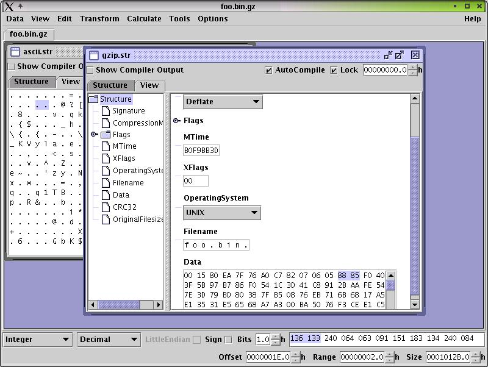

Select Data->Open File from the window menu and choose the file you want to edit.
A dialog will popup where you can select the view template you want to use.
A view template is a collection of structure definitions which are used to view the data. DataWorkshop tries to guess
the most apropiate view templates by looking at the first few bytes of the data and the filename
suffix. You can define your own view templates.
If you did not choose any special file you will only get the two default view templates 'Vanilla Hexeditor'
and 'Empty'. Select 'Vanilla Hexeditor' and click the OK Button.
The file will get loaded and the two view from the view template will be displayed in the center area
of the editor window.

At the bottom of the window you can see three info fields which display the current
selection offset, current selection range and the size of the opened data. You can
click on any fields and edit the values manually. If you change the size field the
data will get changed. By increasing the size value zero bits get appended to the end
of the data, decreasing the size will result in the last bits of the data getting deleted.
All of them count bits and not
bytes. To make reading them simpler the default is to display them in the
format bytes.bits. You can choose other formats and other bases
(e.g. Binary, Decimal, Hex etc) using the Tools->Preferences menu item.
Example: The selected BitRange starts at offset +0000000F.3 (0xF bytes and
3 bits)
Above the info fields is a single line view of the data. You can change the
number of single line views using Tools->Preferences.
On the left side is the corresponding data encoding which you can change
and on the right side is the encoded data. The single line view always shows
the data starting from the current selection offset. If you change the number in the
offset field the single line view will change too.
The single line view can be used to edit the data but the display is very short and it has no structure. The more complex views are in the center area of the window. Dataworkshop has static views and dynamic views.
One way to edit the data is by using the transform or calculate actions in the menu.
They modify the data in a predefined way.
Both work on the current selection range, but transformations paste the transformation
over the current selection, whereas calculations paste the result on the data clipboard.
The other way to edit the data is using a view.
If you click on a data encoding field in the a view a unit gets selected and is
highlighted blue. The selection offset and selection range change accordingly.
If you type some text on while the focus is on an data encoding field the selected
unit gets highlighted red.
Red highlightning means the highlighted unit was not validated and the data
has not changed. If the cursor leaves the unit or return is pressed the data
gets validated.